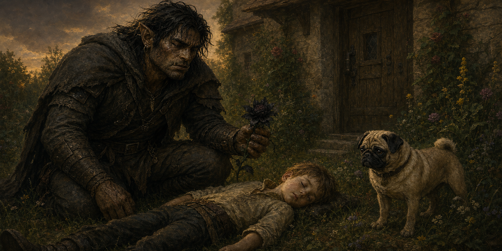

Chapter 1: Offer from the Wind Family
Dark Petals


Dark Petals
15048.11.16
「嘿！你有沒有在聽我說話？」
布朗一回神，一個壯碩男子正貼在他的眼前對他嘶吼。酒館老闆湯瑪斯搖了搖頭。看著布朗一身冒險者的裝扮，又不是當地人，湯瑪斯便告訴他，當地的小貴族溫德家族最近計畫要穿越森林，但由於森林相當危險，希望聘請人手擔任護衛，帶他們穿過去。
布朗想了想，這似乎是個能讓他賺點零錢的好方法，於是便向湯瑪斯問清該怎麼找到溫德家。外頭天色已晚，布朗又向湯瑪斯詢問酒館是否還有空房，但唯一剩下的位子，是一間已經住了一個人的雙人房。
湯瑪斯好心帶著布朗前往那間房間，敲了敲門。一個看起來不太友善的半身人探出頭來。在布朗解釋來意後，那名半身人因為不太喜歡半獸人，拒絕讓布朗入住。湯瑪斯便建議布朗乾脆直接去找溫德家，說不定他們願意提供他過夜的地方。
在路上，布朗意外發現了一間破舊的空屋。他心想，既然沒有人住，在這裡過上一晚似乎也不是不行，於是便走了進去，找到臥房，放下行李後倒在床上睡去。
午夜時分，布朗聽見其他房間傳來腳步聲，立刻警覺地躲進床邊的衣櫃裡。從衣櫃縫隙中，布朗看見入侵者的身影正拿著匕首，朝他原本躺著的床鋪猛刺。驚訝之下，他不小心把手上的背包掉到地上，驚動了對方。兩人在黑暗中纏鬥，最終布朗終於將對方擊暈，並用自己的繩子把那人牢牢綁在屋門口。仔細一看，這名入侵者雖然有人的體型，身上卻覆滿濃密毛髮，多到甚至不太像人，但布朗無法判斷他究竟是什麼生物。在對方昏倒前的那一刻，布朗聽見自己腦海中有個低沉的聲音對他說著：「殺了溫德。」
15048.11.17
醒來後，布朗發現綁在門口的入侵者竟然消失了，連繩子都沒有被破壞的痕跡。雖然滿腹疑問，布朗也只能摸摸鼻子作罷。
走到溫德家門前，布朗敲了敲門，一名女子打開了門。她自稱是溫德夫人，隨即帶著說明來意的布朗進了屋，拜訪被稱為溫德大人的男主人。兩人也向布朗介紹了他們年幼的孩子彼得，以及他的巴哥犬瑪芬先生。布朗表示願意接下這項任務，而溫德大人則承諾，只要他能安全護送一家人穿越森林，就會支付他五十枚金幣作為報酬。
在溫德夫婦開始收拾行李時，布朗去找彼得，想藉機認識這個家庭與這座村子。彼得表示，村裡的人對他們似乎不太親近，就算態度好一點，多半也只是想賺他們的錢。瑪芬先生是他唯一的朋友，也是搬來這座村子後，他爸爸特地帶回來送給他的。彼得也提到，他聽說爸爸準備帶全家前往森林另一端的一座城市，叫做魏斯科。他並不清楚為什麼要去那裡，不過從言談之中，布朗得知他們家似乎信仰一個叫做拉索斯的宗教，而溫德大人不是拉索斯的神職人員，就是替拉索斯做生意的人。
在彼得跑回家的路上，瑪芬先生看著布朗，而布朗腦中又浮現昨晚聽見的那個聲音，低聲說著：「殺了溫德。」
一人一狗回到了溫德家，在門口的花園裡悠閒地走著。布朗發現角落裡有一朵看起來十分詭異的黑色花朵，便偷偷摘下一朵。湊近鼻子一聞，花上傳來一股難以形容的惡臭，花瓣上似乎還沾著奇怪的黏液。出於好奇，布朗將花遞給彼得，問他是否知道這是什麼花。彼得接過花，湊近聞了聞，卻突然頭暈倒地。瑪芬先生立刻大聲吠叫，引來了溫德夫婦的注意。兩人從屋內衝了出來，看見昏倒的彼得，以及掉在他身旁的那朵花。溫德大人大聲喝斥，狠狠訓了布朗一頓，並當場解除與他的約定。溫德夫婦趕緊把彼得抱回屋內，並設法去找醫生。
眼看這裡已經不是自己能待下去的地方，布朗撿起那朵花，往溫德家外走去。回頭一看，他發現瑪芬先生也跟了上來。於是，一人一狗決定依照原本的計畫，穿越森林，朝著名為魏斯科的城市前進。
15048.11.16
"Hey! Are you even listening to me?"
Brown snapped back to attention and found a burly man roaring right in his face. Thomas, the tavern owner, shook his head. Seeing Brown dressed like an adventurer and clearly not a local, Thomas told him that a minor noble family in the area, the Wind family, was planning to cross the forest soon. Since the forest was dangerous, they were hoping to hire a guard to escort them through it.
Brown thought it over. It seemed like an easy way to earn some spare coin, so he asked Thomas how to find the Winds. It was already dark outside, and when Brown asked whether the tavern had any empty rooms, Thomas told him the only space left was a shared room that already had one occupant.
Thomas kindly brought Brown to that room and knocked on the door. An unfriendly-looking halfling poked his head out. After Brown explained the situation, the halfling refused to let him stay, apparently because he did not like half-orcs. Thomas then suggested that Brown go directly to the Wind family instead. They might be willing to let him spend the night there.
On the way, Brown happened upon a run-down empty house. He figured that if no one was living there, spending a single night inside should be fine. So he went in, found a bedroom, put down his belongings, and collapsed onto the bed.
At midnight, Brown heard footsteps coming from another room and quickly hid in the wardrobe beside the bed. Through the crack in the doors, he saw an intruder stabbing wildly at the bed where he had been lying. Startled, Brown accidentally dropped the bag in his hand, alerting the attacker. The two fought in the dark, and in the end Brown managed to knock the intruder unconscious and tie him tightly to the front doorway with his rope. Looking more closely, the intruder had a human-like build, but his body was covered in thick hair, so much that he barely looked human at all. Brown could not tell what kind of creature he was. Just before the creature blacked out, Brown heard a low voice inside his head whisper, "Kill Wind."
15048.11.17
When Brown woke up, the intruder he had tied to the doorway was gone. There was not even any sign that the rope had been cut or damaged. Though full of questions, Brown had no choice but to let it go.
Brown went to the Wind residence and knocked on the door. A woman answered. She introduced herself as Lady Wind and led Brown inside after hearing why he had come, bringing him to meet the master of the house, known as Lord Wind. The couple also introduced their young son Peter and his pug, Mr. Muffins. Brown said he was willing to take the job, and Lord Wind promised him fifty gold if he could escort the family safely through the forest.
While the Winds prepared their luggage, Brown went to talk with Peter, hoping to learn more about the family and the village. Peter said the villagers did not seem close to them. Even when they acted friendly, it usually felt like they only wanted the family's money. Mr. Muffins was Peter's only friend, and his father had brought the dog home for him after they moved to this village. Peter also said he had heard that his father meant to take them to a city on the far side of the forest called Wescoe. He did not know why. From the conversation, however, Brown gathered that the family seemed to worship a religion called Laxthos, and that Lord Wind was either one of its clergy or someone doing business for it.
As Peter ran back toward the house, Mr. Muffins looked straight at Brown, and the same voice from the night before returned to Brown's mind, whispering again, "Kill Wind."
Brown and the dog wandered through the garden in front of the Wind home. In one corner, Brown noticed a strange black flower and secretly picked one. When he brought it close to smell it, a foul stench rose from it, and there seemed to be some odd slime on the petals. Out of curiosity, Brown handed the flower to Peter and asked whether he knew what it was. Peter took it, leaned in to smell it, and suddenly collapsed in a dizzy faint. Mr. Muffins barked loudly, drawing the attention of Lord and Lady Wind. They rushed out of the house and saw Peter unconscious beside the flower. Lord Wind furiously shouted at Brown, scolded him, and immediately canceled their arrangement. The couple hurried Peter back inside and tried to find a doctor.
Seeing that there was no longer any place for him there, Brown picked up the flower and left the Wind house. When he looked back, he saw that Mr. Muffins had followed him. So the two of them decided to stick to their original plan, cross the forest, and head for the city of Wescoe.